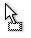
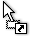
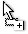

Schema Editing Actions
You can edit an XML schema using drag and drop operations or contextual menu actions.
Drag and drop is the easiest way to move the existing components to other locations in an XML
schema. For example, you can quickly insert an element reference in the diagram with a drag
and drop from the Outline view to a compositor in the diagram. Also, the
components order in an <xs:sequence> can be easily changed using drag and
drop.
If this property has not been set, you can easily set the attribute/element type by dragging over it a simple type or complex type from the diagram. If the type property for a simple type or complex type is not already set, you can set it by dragging over it a simple or complex type.
- Move - Context dependent, the selected component is moved to the destination.
- Reference - Context dependent, the selected component is referenced from the parent.
- Copy - If the Ctrl (Meta on Mac OS) key is pressed, a copy of the selected component is inserted to the destination.
-  - When moving a component.
-  - When referencing a component.
-  - When copying a component.
You can edit some schema components directly in the diagram. For these components, you can edit the name and the additional properties presented in the diagram by double-clicking the value you want to edit. If you want to edit the name of a selected component, you can also press Enter. The list of properties that can be displayed for each component can be customized in the Preferences.
When editing references, you can choose from a list of available components. A component from
an imported schema whose target namespace does not have an associated prefix is displayed in
the list as componentName#targetNamespace. If the reference is from a target
namespace that was not yet mapped, you are prompted to add prefix mappings for the inserted
component namespace in the currently edited schema.
You can also change the compositor by double-clicking it and choose the compositor you want from the proposals list.
There are some components that cannot be edited directly in the diagram: imports, includes, redefines. The editing action can be performed if you double-click or press Enter on an import/include/redefine component. An edit dialog box is displayed, allowing you to customize the directives.